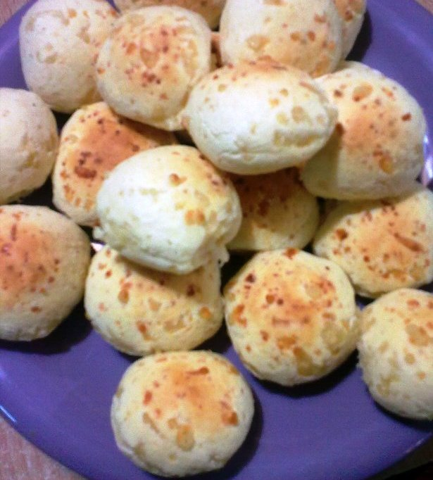

Chipa Recipe

Description
Chipa, or pão de queijo (meaning
bread of cheese) is a soft spherical pastry. One can think of
it like a "cheese nugget" of sorts. However, no analogy will be
sufficient to what a wonderful treat it is.
Chipa are a very common baked good in
Argentina and other South American countries. You could walk
into any bakery and they'd have some for you or you could go to
a grocery store and get a pre-made bag of chipa that you just
add water to and bake (and maybe add an egg or two). However,
outside of these places we must make due with a more crude form
of making these.
Ingredients
- 0.5kg (~1.1lb) of cassava* starch
- 3 eggs
- 150g (~5.3oz) butter
- 250g (~8.8oz) pategras** cheese
- 150g (~5.3oz) parmesan** cheese
- 150g (~5.3oz) milk
- 1tsp salt
- 1tsp baking powder
*corn starch is easier to find, but cassava is just better.
**gouda can work too. Its worse but easier to find.
Steps
-
Cut pategras cheese into small strips or
cubes. Shred the parmesan.
-
In a bowl add the cheeses, cassava starch,
and room-temperature butter. Mix by hand.
-
In another bowl add eggs, salt, baking
powder and milk. Mix with a fork.
-
Pour the bowls together (recommend the liquids into the
solids). Mix by hand.
-
Put mixture into freezer for
30 minutes.
-
Remove mixture from freezer. Knead into
small balls (~golf-ball sized). Put in
freezer again for a small while.
-
Bake at 230°C (446°F) for 10-11
minutes.
-
Put on the movie Wild Tales (Relatos
Salvajes) and enjoy your warm chipa.
Link to an actual recipe
Home Page